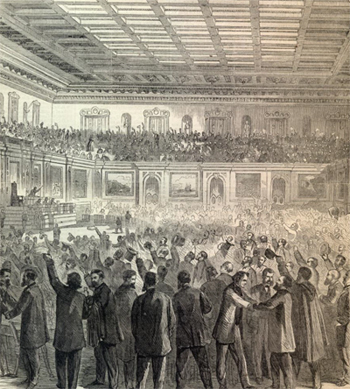

|
The Thirteenth Amendment officially ended slavery in the United States,
completing a revolution in America. The amendment to the United States
Constitution was passed by Congress on January 31, 1865, and ratified on
December 18, 1865. Its text reads:
SEC. 1. Neither slavery nor involuntary servitude, except as a punishment
for crime whereof the party shall have been duly convicted, shall exist within
the United States, or anyplace subject to their jurisdiction.
SEC. 2. Congress shall have power to enforce this article by appropriate
legislation.
The march towards freedom that the Thirteenth Amendment capped began with
runaway and contraband slaves that clogged Union lines. Their actions forced
military and political leaders to confront the future of the institution of
slavery. President Abraham Lincoln mortally wounded slavery in America with his
Emancipation Proclamation and by prosecuting the Civil War until the Confederacy
was destroyed. The course of the war altered from an effort to preserve the
Union to the radical undertaking of slave emancipation. As early as the 1864
election, Lincoln endorsed an amendment to abolish slavery.
Most Republicans assumed that with the abolition of slavery, African
Americans in the South would receive the same treatment as whites. This belief
owed to an understanding that there was no middle ground between slave and free
status. However, the black codes (laws passed in every Southern state after the
war that restricted the freed men and women) disabused Congressional Republicans
of the notion of equal treatment in the South. An incredulous Northern public
felt that the sacrifices of the war did not warrant a return to slavery, as the
black codes implied. Spurred on by white Southern intransigence, Radical
Republicans pushed for a more specific and intensive federal effort to protect
civil rights.
A key, and often overlooked, component of the Thirteenth Amendment is the
enforcement clause, the first in the Constitution, which recognized Congress's
|

The Thirteenth Amendment was widely hailed in
the North, as this illustration from Harper's Weekly--which
records the moment at which the Amendment was approved in the
House of Representatives--suggests.
|
power to define and protect freedom. Some Southern states, before Congressional
Reconstruction, rejected the Amendment, mainly because of the enforcement
clause. It was viewed as an unwarranted expansion of federal power that
nationalized racial problems.
Though the Thirteenth Amendment abolished slavery, it was unclear what
freedom meant. In many ways, the ratification of the Amendment marked the
beginning of a long struggle over the implications of freedom. William Lloyd
Garrison, the prominent abolitionist, considered his work complete after
ratification. Others believed that formal, legal removal of slavery from the
American system did not go far enough. "What is freedom?" argued Republican
Congressman James A. Garfield, "Is it bare privilege of not being chained? If
this is all, then freedom is a bitter mockery, a cruel delusion." Frederick
Douglass, the famous black abolitionist, challenged Republican leaders to go
beyond a narrow conception of freedom. "Slavery is not abolished," said
Douglass, "until the black man has the ballot."
The debate over freedom became a debate over the role of government in a
democratic society. On the one hand, some Republicans and nearly all of the
Democrats believed that it was up to the freedmen to make a life for themselves
like white citizens. On the other side, Radical Republicans viewed emancipation
as a unique event that required the federal government to take positive action
to help the freedmen transition from slavery to freedom. The black codes in no
small way pushed the Republican Party into embracing federal intervention to
help ex-slaves. Congress passed the Freedmen's Bureau Bill, the Civil Rights
Act of 1866, and the Fourteenth Amendment. The intent of the Civil Rights Act
was to define what freedom meant for the former slaves. The bill was designed,
said one Congressman, "to secure to a poor weak class of laborers the right to
make contracts for their labor, the power to enforce the payment of wages, and
the means of holding and enjoying the proceeds of their toil."
Though one of the requirements under President Andrew Johnson's plan for
Reconstruction was the ratification of the Thirteenth Amendment, he took a
narrow view of it, arguing that the amendment only ended formal slavery.
President Johnson also vetoed both the Freedmen's Bureau Bill and the Civil
Rights Act and condemned the proposed Fourteenth Amendment. Congress overrode
the vetoes, a first for major pieces of legislation in the U.S. history, and the
Fourteenth Amendment was ratified two years later. The political battles over
the meaning of freedom marked a major change in Federal Reconstruction Policy
with Radical Republicans assuming control over Southern Reconstruction. In the
ensuing years, the Fifteenth Amendment was ratified and Congress passed the
Civil Rights Act of 1875, both efforts to give meaning to the Thirteenth
Amendment.
Source: Joan Waugh, ed., Facts on File Encyclopedia of American
History: Civil War and Reconstruction, 1856 to 1869 (New York: Facts on
File, 2003), 352-53.
|